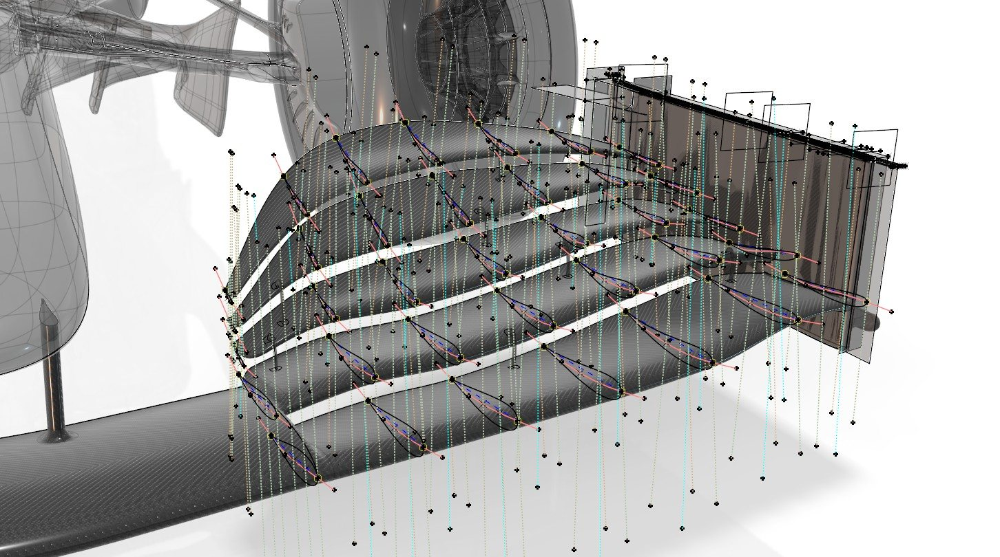
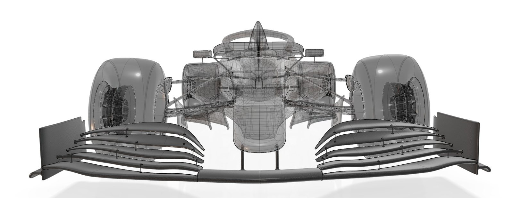
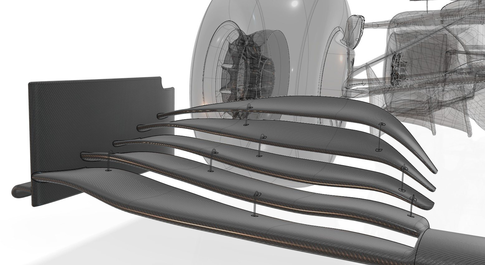

← All projects
Dassault Systèmes · F1 virtual twin · 2025
Front wing 2019
The 2019-regulation front wing of the Dassault Systèmes F1 virtual twin: a wide mainplane, four flaps and a flat endplate, modeled in the context of the full car.
- Role
- Design & surfacing
- Tools
- CATIA GSD+
- Year
- 2025

What I did
- Mainplane, flaps, endplate and flap adjusters built as separate parts with stable, editable GSD+ surfaces.
- Each element linked to its aerodynamic function (front downforce, outwash, wake control) to explain the wing part by part.
- Reference generation used to compare with the 2025 wing element by element.


Gallery



